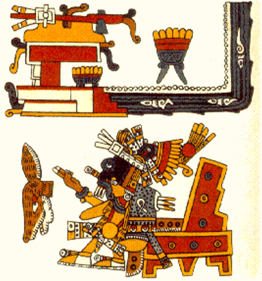

Tonalpohualli · correlación de Arturo Meza
Tu identidad tiene origen en el tiempo.
Conocerlo cambia la forma en que decides.

- Sesión en línea: 30 min
- Ofrenda: $250 MXN por persona
- Recibes tu formato en PDF
¿Cómo aplica en tu vida?
El Tonalpohualli te invita a honrarte y centrarte en lugar de forzarte a copiar caminos ajenos.
- Comprendes los “porqués” de tu historia personal y comienzas a descubrir tu “para qué”.
- Identificas tus fortalezas naturales y los desafíos que viniste a integrar.
- Reconoces los patrones que han marcado tu camino y cómo resignificarlos.
- Entiendes tu ritmo interno y tus ciclos personales.
- Detectas decisiones alineadas con tu verdadera naturaleza.
- Recuperas coherencia entre lo que eres, lo que deseas y lo que haces.
- Ordenas tu línea de tiempo y das sentido a tus vivencias.
- Comprendes mejor a quienes te rodean desde su propia naturaleza.
- Dejas de forzar la vida y comienzas a actuar desde la conciencia.
- Recibes el mapa de tu identidad espiritual, que revela la esencia con la que llegaste a esta experiencia humana.
Cinco pasos, a tu ritmo
Tu ofrenda aparta tu lugar
$250 MXN por persona, por depósito o transferencia. Te comparto los datos por WhatsApp y confirmo cuando la recibo.
Me compartes tus datos de nacimiento
Tu fecha, tu hora y tu lugar de nacimiento, por WhatsApp. Si no sabes la hora, se calcula sin ella. Yo calculo tu Tonalpohualli con la correlación de Arturo Meza: 22 conceptos que te interpreto.
Eliges tu horario
Escoges el día y la hora que te acomoden entre los que te propongo.
Tu siembra
No es una interpretación: es la siembra de tu nombre. Tu nombre y los 22 conceptos de tu Tonalpohualli se siembran en tu mente. Tu sesión es en línea y dura 30 minutos. Comparto mi pantalla y te muestro directamente tu cálculo. Ten a la mano papel y lápiz o pluma.
Es mucha información valiosa y suele emocionar. Por eso la siembra va con pausas: me detengo para que me digas lo que piensas y lo que sientes antes de seguir.
Recibes tu formato en PDF
Al inicio de la siembra te lo comparto, por si quieres revisarlo a la par conmigo. Trae el texto de tus 22 conceptos, con el nombre en náhuatl y su traducción al español de cada uno, y el sello del Códice Borgia: la imagen de tu signo y de tu acompañante.
Si después de tu siembra quieres ir más a fondo, lo platicamos.
¿Te recomendó alguien? Cuéntame quién en tu mensaje.
Así se ve tu cálculo
Nombre en náhuatl, traducción al español y el sello del Códice Borgia de tu signo y tu acompañante.

- Rumbo
- TlahuiztlampaLugar del amanecer · Oriente · Amarillo
- Tezcatlipoca · Espejo
- Quetzalcoatlenergía vital, la voz que nutre y da vida
- Numeral del día
- 3, Yeiequilibrio
- Signo del día
- MazatlVenado
- Acompañante
- Tlalocantecuhtliseñor del licor de la tierra: ímpetu, tenacidad, moldeamiento
- Veintena
- AtemoztliEl descenso de las aguas
Ejemplo: el tonal de Mázatl. Tu formato incluye los 22 conceptos de tu cálculo.
Porque tú no estás separado del tiempo
Recuerda: tú eres tiempo.
- 30 min en línea · $250 MXN por persona
¿Te recomendó alguien? Cuéntame quién en tu mensaje.